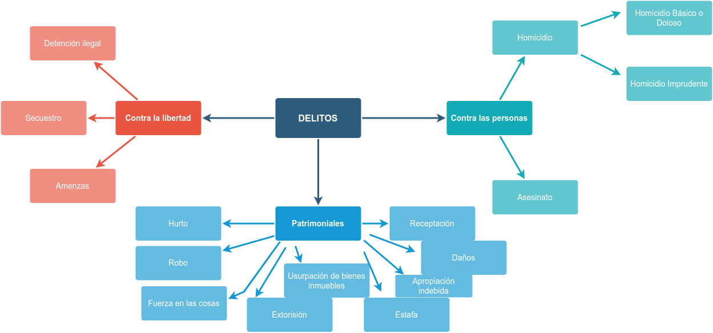

Jurídica
Delitos
- Delitos Patrimoniales
- Delitos contra la Libertad
- Delitos contra las personas
Delitos Patrimoniales
- Hurto
- Robo
- Fuerza en las cosas
- Extorsión
- Usurpación de bienes inmuebles
- Estafa
- Apropiación indebida
- Daños
- Receptación
Delitos contra la libertad
- Detención ilegal
- Secuestro
- Amenazas
- Coacciones
Delitos contra las personas
- Homicidio
- Homicidio Básico o Doloso
- Homicidio Imprudente
- Asesinato
